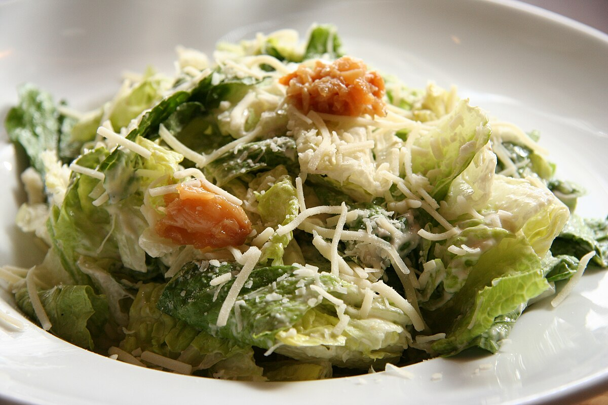

Caesar Salad

Description
This Caesar salad recipe is the same one I made at a very fancy restaurant while I was in college. The best part of the job was making tableside dishes, including this Caesar salad which is the best I've ever had and sure to impress!
Ingredients
Yield: Two servings
- 1/2 head romaine lettuce, chopped
- 1/4 cup grated Parmesan cheese
- 2 tablespoons croutons
- 1/4 cup Caesar dressing
Steps
- Gather all ingredients.
- To make the Caesar dressing: Mash anchovy fillets and garlic in a large salad bowl. Add lemon juice, red wine vinegar, Dijon mustard, egg yolk, and Worcestershire sauce; whisk until smooth and creamy. Gradually stream in olive oil while whisking constantly. Season to taste with salt and black pepper.
- To serve: Gently mix romaine lettuce and Parmesan cheese into dressing until thoroughly coated.
- Top salad with croutons.
- Bone Apple Tea
Home